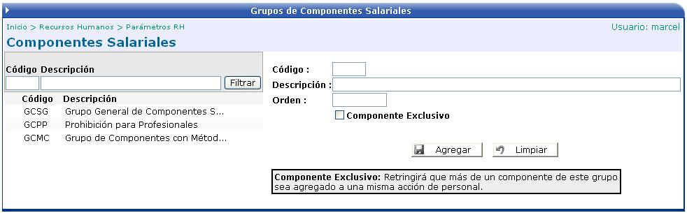

En la siguiente pantalla se crearán los grupos de componentes salariales que la empresa le brinda al funcionario. Estos componentes van a aumentar el salario del empleado.

Código: identificará el componente salarial.
Descripción: nombre del grupo componente salarial.
Orden: definirá el orden en que se desea que se desplieguen los componentes a la hora de la impresión de la boleta de pago.
Componente Exclusivo: si este check esta activado, restringirá que más de un componente de este grupo sea agregado a una misma acción de personal.
Una vez creado el grupo de componentes se tienen que asociar los elementos que le pertenecen.
Algunos de estos elementos pueden ser el zonaje, la dedicación exclusiva, la carrera profesional, etc.
Para ello se debe de presionar el botón
de  y se presentará la siguiente pantalla:
y se presentará la siguiente pantalla:

Código: identifica al elemento del componente
Descripción: nombre del elemento.
Comportamiento: le permitirá al usuario determinar como desea que se presente la captura del componente en la acción de personal. Hay dos comportamientos especiales:
• Usa Tabla: le permitirá asociar este componente, con un detalle de tabla salarial.
• Método de Cálculo: le permitirá asociar un detalle al componente, con el cual podrá establecer un cálculo especial.
Complemento: complemento de la cuenta financiera donde se realizarán los movimientos contables.
Salario base: identificará el componente como un concepto de salario base. Si se activa este check, se marcará este componente como salario base y el actual será desmarcado.
Desglosar Pago en Incidencias: esta opción genera automáticamente un concepto incidente de tipo importe y lo asocia al componente. En el cálculo de la nómina estos componentes se verán reflejados como incidencias.
El botón de MÉTODOS permite asociar un detalle al componente mediante el cual se puede determinar que el componente se comportara como un multiplicador o un monto.